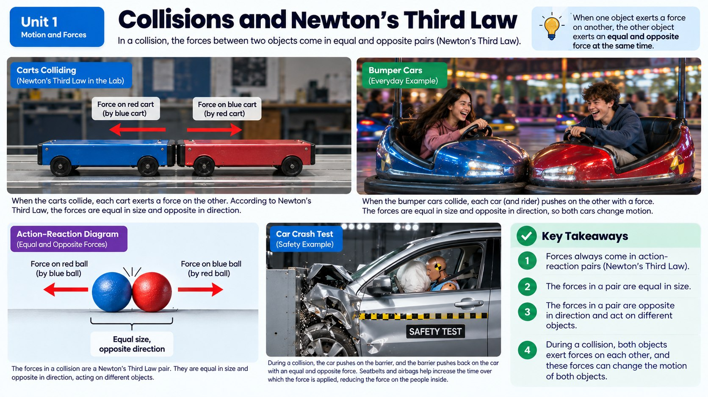

The pole doesn't move and looks fine, but the truck crumples badly — does that mean the pole pushed on the truck harder than the truck pushed on the pole?

Every Push Has a Partner
It's tempting to think that in our crash, the pole must be exerting a bigger force on the truck than the truck exerts on the pole, since the truck ends up so much more damaged. But Newton's third law of motion tells us that's not actually true. This law states that for every action, there is an equal and opposite reaction — in other words, whenever one object exerts a force on a second object, the second object exerts an equal force back on the first object, in the opposite direction. During the crash, the truck pushes on the pole with a certain amount of force, and the pole pushes back on the truck with that exact same amount of force, just in the opposite direction.
One common mix-up is confusing an action-reaction pair with two different forces acting on the very same object. For example, gravity pulls the truck downward, and the road pushes back up on the truck with a supporting force — but those two forces are not a Newton's third law pair, because they're both acting on the truck itself, and true action-reaction pairs always act on two different objects. The truck's actual action-reaction partner for gravity is the truck pulling the entire Earth upward with an equal and tiny force, and the actual partner for the road's supporting push is the truck pushing back down on the road. Keeping straight which forces act on which object is one of the trickiest parts of learning Newton's third law, but it's essential for understanding what's really happening during any collision.
Then Why Does the Truck Look Worse?
If the forces are equal, why does the truck crumple while the pole barely gets scratched? The key is that action-reaction force pairs act on two different objects, so the forces never cancel out — and equal forces don't always produce equal effects. Remember from an earlier topic that the same force produces different amounts of acceleration depending on an object's mass. The pole is anchored solidly into the ground, connected to a huge mass of concrete and earth, so the force from the truck barely accelerates it at all. The truck, on the other hand, is much less massive by comparison and isn't anchored to anything, so that same-sized force from the pole causes it to decelerate dramatically and crumple. Equal forces, wildly different outcomes — because mass makes all the difference in how an object responds.
You can picture this with real numbers. Suppose the collision produces a force of 20,000 newtons on both the truck and the pole. The pole, effectively locked to thousands of kilograms of concrete foundation and packed earth, experiences almost no acceleration from that force — its effective mass is so enormous that the same 20,000 newtons barely budges it. The truck, with a mass of around 2,000 kilograms, experiences a dramatic deceleration from that very same 20,000 newtons, because a smaller mass responds far more to an identical force. The force was identical on both objects the entire time; only the resulting acceleration was wildly different, and that difference in acceleration is exactly what determines how much each object bends, crumples, or stays put.
Energy Transfer in a Collision
Beyond the forces themselves, collisions are also about energy transferring from one object to another. When the truck collides with the pole, kinetic energy moves out of the truck and into the pole, the ground, and the surrounding air as sound and heat, as you learned in the friction and energy topic. How much energy gets transferred, and how damaging that transfer turns out to be, depends on several factors working together: the vehicle's speed, its mass, and the protective features built into it, like crumple zones, airbags, and seatbelts.
That's the big picture for this whole unit: a crash isn't caused by one single thing. It's the combination of reference frames, speed, inertia, mass, force, and energy transfer all interacting at once — and understanding each piece is exactly what lets engineers design safer roads, safer cars, and safer restraints to protect the people (and hopefully, the crash-test dummies) inside.
When Two Moving Vehicles Collide
Everything in this unit has focused on a truck hitting something that doesn't move, like a pole, but Newton's third law applies just as much when two moving vehicles crash into each other. In that kind of collision, both vehicles push on each other with equal and opposite forces, exactly like the truck and the pole, but now both objects are free to speed up, slow down, or even end up moving together in the same direction afterward.
Scientists track this using momentum, a property that combines an object's mass and velocity, and one of the most useful facts about a collision is that the total momentum of all the objects involved right before the crash equals the total momentum right after, as long as no outside forces interfere. That means if you know how each vehicle was moving before a collision, you can use momentum to figure out how they'll be moving afterward, which is exactly the kind of evidence crash investigators, insurance adjusters, and safety engineers rely on when they reconstruct exactly what happened in a real accident.
Real-World Connections
Rocket Launches
A rocket blasts hot gas downward out of its engines, and that gas pushes back on the rocket with equal force in the opposite direction, launching it upward — a textbook action-reaction pair.
Walking Across a Room
Every step you take pushes backward against the floor, and the floor pushes forward on your foot with equal force — that reaction force is literally what moves you forward.
Meet the Scientist
Aerospace Propulsion Engineers
These engineers design rocket engines by calculating exactly how much gas needs to be expelled, and how fast, to produce enough reaction force to lift a spacecraft off the ground. Every successful launch, from a weather satellite to a crewed mission, depends on getting that action-reaction math exactly right.
Key Vocabulary
Bold, underlined words in the reading above are clickable too — tap one to see its definition pop out. Or click or tap a card below to reveal the definition.
Explore More
Chapter Review
1. According to Newton's third law, if the truck pushes on the pole during a crash, what does the pole do?
2. Why does the truck crumple more than the pole, even though the forces between them are equal?
3. Why don't action-reaction force pairs cancel each other out?
4. During the crash, what happens to the truck's kinetic energy?
5. Which of the following affects how much damage a collision causes?
California Science Test (CAST) Practice
A moving truck rear-ends a parked car at a stoplight, and the two vehicles lock together and move as one unit right after impact. Sensors recorded each vehicle's mass and velocity right before and right after the collision.
| Vehicle | Mass (kg) | Velocity Before (m/s) | Velocity After (m/s) |
|---|---|---|---|
| Truck | 2000 | 6 | 4 |
| Parked Car | 1000 | 0 | 4 |
Which claim about the forces during this collision is best supported by the data in the table?